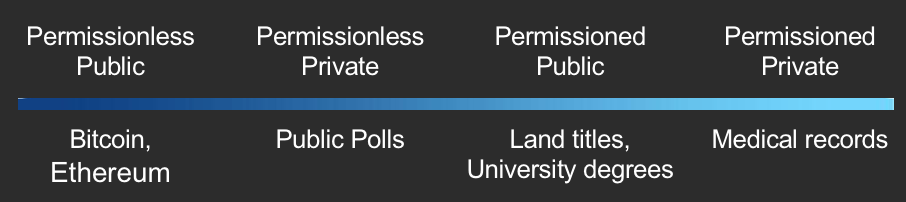

When GDPR becomes real, and Blockchain is no longer Fairy Dust
by Marta Piekarska (Linux Foundation), Michael Lodder (Evernym), Zachary Larson (Economic Space Agency), Kaliya Young (Identity Woman)
Abstract
The General Data Protection Regulation (GDPR), enacted by the European Parliament in 2016, was designed to give users more control and rights over their personal data. Companies and governments will find it increasingly difficult to be GDPR compliant with current industry practices. Following the implementation date of May 25, 2018, managing data will be both toxic and expensive. Many precious resources will be required for improving and maintaining the security, privacy, and governance of personal data. Methods for storing less personal data will ease the burden of GDPR compliance. This document describes the GDPR requirements and the different approaches to digital identity solutions and finally explains why distributed ledger technology may offer an opportunity for enterprises to simplify data management solutions that are GDPR compliant.
GDPR Requirements
Existing infrastructure has data processors housing personal data and continually collecting more. A person may not know what is known about them until they petition for it. To do so is often difficult, and entities are not required to respond in a timely manner or at all. Entities often share the data with others for marketing purposes. This can cause people to receive unwanted, automated marketing without understanding why they are being targeted. A person can call a number to be put on a do-not-contact list, but companies frequently do not honor those requests. Sometimes data processors have incorrect data, and it can be difficult for individuals to correct this data and those changes may not be propagated to other entities. A person must try to fix the problem with every data processor they know about that has knowledge of said data. GDPR was created to help address these issues.
Unfortunately the GDPR brings with it liabilities forth for enterprises storing personal data. When personal data becomes compromised or known, the companies become targets of government investigations and lawsuits. Smaller entities can go bankrupt when this happens. Compliance with data laws can require costly and time intensive audits, investing in technical and physical security measures, and hiring trained security personnel in order to limit their liability to financial lawsuits and fines and susceptibility to attacks. Many companies do not want to store personal data, but nonetheless have a real, operational need for the data. The current infrastructure doesn’t enable just-in-time access that would enable them to get access to what they need, when they need it, without storing the data themselves.
GDPR[1] is composed of articles that outline the rights of individuals and requirements of data processors. The following is a brief summary of rights granted to individuals:
-
Article 6: Lawfulness of processing. Processing personal data is generally forbidden if it is not expressly allowed by law or if the impacted persons have not consented to processing these data.
-
Article 7: The right of consent. The individual must consent to personal data being collected and can rescind that consent at any time.
-
Article 12: The right to ask questions about use of personal data and to seek redress if questions are not answered in a clear, concise, timely manner.
-
Articles 13 & 14: The right to know how personal data is used at the time of collection and the length of time for which it will be stored and contact information for the collecting party.
-
Article 15: The right to access the personal data that is being processed.
-
Article 16: The right to have incorrect personal data rectified.
-
Article 17: The right to have personal data erased when it is no longer necessary for the purposes for which they were collected and there is no legal ground for their maintenance.
-
Article 18: The right to restrict data processing where the data is inaccurate, its collection unlawful, or its processing no longer required.
-
Article 19: The data collecting party must inform all additional data processors with whom it shares personal data to cease processing data that has been rectified or erased.
-
Article 20: The right to receive their personal data in a structured, commonly-used, machine-readable format which they can freely share with other data processors.
-
Article 21: The right to object to personal data being used to profile or market to them.
-
Article 22: The right to not be subject to legal outcomes that rely solely on automated data processing.
-
Article 25: The right to have the minimal amount of data stored as necessary for data processors to do their work.
-
Article 77: The right to file a complaint against non-compliant data processors.
-
Article 80: The right to have a legal representative for actions against data processors.
The following is a brief summary of obligations for data processors:
-
Article 24: Must be able to demonstrate all processing and handling is in compliance.
-
Article 28: Must notify data owners when data will be shared with other processors.
-
Article 29: Must only process authorized data for authorized purposes.
-
Article 30: Must maintain a record of all data processing activity. The record must include who processed it, what was processed, where it was processed or transferred, when it will be erased, and the security measures in place when it was done.
-
Article 32: Must protect the data using pseudonymization and encryption. They must ensure those measures are tested regularly and they can recover in the event of failures.
-
Article 33: Must notify data owners and other data processors in the event of a breach within 72 hours of first having become aware of the breach.
-
Article 37: Must appoint a data protection officer.
-
Article 50: The transfer of data must only happen to countries deemed as having adequate data protection laws.
The legal language must be translated into the technical requirements. Without a solid solution, organizations in breach of GDPR can be fined up to 4% of annual global turnover or €20 Million (whichever is greater). This is the maximum fine that can be imposed for the most serious infringements e.g. not having sufficient customer consent to process data or violating the core of Privacy by Design concepts. There is a tiered approach to fines, e.g. a company can be fined 2% for not having their records in order (article 28), not notifying the supervising authority and data subject about a breach or not conducting impact assessment. It is important to note that these rules apply to both controllers and processors — 'clouds' will not be exempt from GDPR enforcement.
Technical Requirements
GDPR mandates in order to ensure a complete solution that protects the user, or data subject, and restricting enterprises can be summarized in the following points.
-
Availability: The user should always have access to their data, no matter if it is stored locally or remotely. The data should be protected from leakages or attacks because it affects availability.
-
Completeness: Data and any event regarding its collection and processing should be recorded.
-
Confidentiality: Only parties involved in the exchange of data should be able to see details of that transaction.
-
Correctness: The accuracy of data recorded should be assured.
-
Immutability: There should be no possibility of changing historical logs.
-
Integrity: The content of the data store should be protected from malicious or unintentional changes.
-
Interoperability: Users should be able to combine data coming from various sources.
-
Non-repudiation: Interaction with any data should not be deniable at later points in time.
-
Rectification & Erasure: Users must be able to change or erase their personal data. They must also be able to make corrections of erroneous data.
-
Traceability: Any occurrence of processing data must be traceable and linkable to previous occurrences of processing of that data.
GDPR is the standard proposed by European Parliament to protect European citizens and return control over private data to the users. However, the legislators in other parts of the world recognize that same need for data control. For instance in China the Standing Committee of the National People’s Congress is already proposing changes similar to the GDPR[2]. Similarly there are laws like COPPA in the U.S. and PIPA in Japan.
Self-Sovereign Identity as a Model for GDPR
The requirements of the GDPR call for user control of their private information. One model for that is self-sovereign identity, a movement that started before the GDPR was introduced. It grew out of the user-centric identity efforts to support the individual being at the core of their own digital identity. The community is focused on how various sophisticated cryptography and shared distributed ledgers allow for this to actually happen. The community focused on user-centric identity and personal data control has several times produced guiding rules or principles that also align with the vision of GDPR and actually influenced its authors. In 2005 Kim Cameron defined Laws of Identity, In 2010 during the same week while Phil Windley[3] and Kaliya Young[4] each posted created Personal Data Ecosystem principles.
Several years ago new term gained traction“self-sovereign identity”. Devon Lefretto first used the term Self-Sovereign Authority within the VRM community in 2011 and in that context worked to articulate its meaning. References to Self-Sovereign Identity appear in 2015 by John Edge founder of ID2020. Devon Lofretto published a post defining the term in February 2016[5]. Christopher Allen circulated ideas about a set of principles and published them in the spring of 2016.[6].
The W3C standardization body has a Verifiable Claims Working Group, which focuses on the API definitions. While Self-Sovereign identity is not necessarily the ideal or full answer to GDPR requirements, it is interesting to analyze it, as one of the possible solutions.
Christopher Allen describes 10 principles for a self-sovereign identity system.
- The person behind the identity needs to exist. Nobody can be fully digital, we need to have a “sum” (cogito ergo sum) that is the core of who one is. That sum can later be described in a digital form.
- Every entity should be in control of their identity. One who is described by the identity is the one who is the central authority on that identity. While others can make claims to one’s identity, they should not have control over it.
- The owner should always be able to access their own data. This is crucial, as without access to the identity, a user has no way to prove or control who they are. While the owner may not be able to modify all the information about themselves (if there is a court ruling attached to a given identity the owner should not be able to change that ruling) but they have to be made aware of all that is created about them.
- The self-sovereign system requires full transparency on all the algorithms, designs, management and updates. In order to ensure that transparency, the algorithms used should be free, open-source and well described in public.
- Such systems must be designed to exist forever, or be persistent as long as the owner wants them to be. The protection mechanisms and the implementation details may change over time, but the core identity should last forever. All of these should not prevent the rule of right to be forgotten, that allows users to request removal of any of the claims made to their identity. Thus, the identity must be separate from claims made to it.
- Following the understanding that the system needs to be available and persistent, the data should be portable. The identity cannot be held by a single entity, in case this body disappears. A transferable architecture allows for a simple method of moving data while keeping it available.
- Connected to this is the rule of interoperability. All systems should communicate and be available anywhere in the world, not dependent on borders or governments.
- As users have full control over the system, they should also be able to give their consent to the entities that want to use their identity. The design should be such, that while allowing for full information sharing, it is always done with the agreement of the user.
- It should also be strongly minimized. When requested to disclose information, the system should give away as little as possible.
- Finally, the user should always be the center of interest, and his rights should be protected, independently from any third party.
While the rules describing self-sovereign identity are theoretical and not necessarily all applicable, most modern systems that aim to define who we are and how we work in the digital world, closely follow the above principles.
Let us now look at the technical implementations proposed by various entities.
Technical Approaches to Digital Identity
A few different technical proposals for digital identity have been incubated in conjunctions with the discussions of self-sovereign identity. These may offer strong foundations for any attempts to implement GDPR-compliant data. Some follow the self-sovereign rules defined above, while some only take what is needed. This section describes the two most mature developments. However, it is important to recognize that each suits the use case it is trying to solve. We have yet to see a universal approach acceptable on a global scale.
Decentralized Identity Foundation – DIF
Self-Sovereign Focus: Control
In May 2017, a new movement was started: creating a space for organizations to develop fundamental primitives, protocols and tools for an interoperable ecosystem under the umbrella of Decentralized Identity Foundation[7]. We no longer live in a world which accepts Big Brother approach of storing all information about everyone in one place. However, a huge paradigm shift needs to happen when moving from a centralized registry of objects — people, devices and entities — to a decentralized system. This requires development of new specifications, protocols, formats, and implementations for cross-chain rooting, indexing, and resolution of decentralized identifiers and names.
Decentralized Identifiers (DIDs) are used as bases for a verifiable, fully self-controlled digital identity. In ideal circumstances, DIDs adhere to the rules of self-sovereignty, not being dependent on any centralized registry, identity provider or certificate authority. To interact with the world, DIDs need to be resolved to DID documents that contain authentication mechanisms, authorization information and service endpoints. With that, a trusted interaction can be started with an entity. Unlike in a traditional model, where identity management system relies on a centralized authority that provides cryptographic trust verification, in a DID world we need a federated identity management[8]. Following the dictums of Privacy by Design[9], each entity may have as many DIDs as necessary, to respect the entity’s desired separation of identities, personas and contexts.
Such a decentralized design eliminates the need for registries that collect all the identifiers as well as centralized certificate authorities for key management. Thus, a traditional Public Key Infrastructure is no longer valid. However, it needs to be replaced with a new, DLT-compliant architecture, where each entity can have its own root authority. Such system is called a Decentralized PKI.
As interoperability is one of the key focuses of DIF, DID methods that allow for collaboration with centralized or federated systems can be developed and are encouraged as a bridging mechanism. Until now there have been several DID methods proposed by various entities ranging from the Sovrin Foundation, Bitcoin, Ethereum and Verifiable Claims worlds.
However, DID is only the way to address the objects; the question is how to store and compute the data. The control and ownership need to be in the hands of the object, and such a system is also part of what DIF is focusing on, through their work on Hub. A Hub is a data store containing semantic data objects at well-known locations. Objects in a Hub are signed by an identity and mapped to semantic data objects through an API. Anyone can address them through a global namespace.
The final part of DIF’s work is Chainpoint, which focuses on a scalable protocol to anchor data in the Blockchain and generate receipts. One of the key factors of the future interactions of entities on a Blockchain will be trust and reputation. These can only be built through attestations between groups of individuals and businesses, which can be used make important decisions in personal and business life.
Verifiable Claims
Self-Sovereign Focus: Minimization
Today we have to reveal the maximum amount of information even when interacting with people who do not need that information. Moreover, it is hard to prove your qualification over the internet: driver’s license, proof of age, education qualification is not easily verifiable. The purpose of verifiable claims is to resolve these twin issues. This is what the W3C Verifiable Claims Working Group[10] is focusing on. 150+ individuals and organizations are now planning how to create, store, transmit and verify digital credentials via the Internet.
A Verifiable Claim is defined as an identifier that describes four roles within a single capsule. An Issuer issues verifiable credentials about a specific Subject. The Holder stores credentials on behalf of a Subject. Holders are typically also the Subject of a credential. The Verifier requests a profile of the Subject. A profile, which contains a specific set of credentials. The verifier verifies that the credentials provided in the profile are fit-for-purpose. The Identifier Registry is a mechanism that is used to issue identifiers for Subjects.
Why do we need Verifiable Claims? Because one does not need to show their precise age, just that they are above a certain age. That they are capable of driving. That they are eligible to practice as a medical doctor and so on. This minimizes data disclosure, fulfilling one of the precepts of self-sovereign identity while simultaneously reducing liability for a data holder, especially under laws like GDPR.
Blockchain Solutions to GDPR
Blockchain is a up-and-coming technology for digital identities, and is already in extensive use for DIF and other self-sovereign-focused technologies. It needs to be part of any discussion about GDPR compliance. However, some fear that the Blockchain is the exact opposite of what GDPR requires of enterprises.
If we take public, permissionless Blockchain, then indeed everything that happens within such a system is visible and available to anyone. However, the domain of Blockchain technology expands beyond permissionless, public versions. If we take the example of medical records, nobody would find it advisable or feasible to store their data in a public ledger. For such a use case we need a private, permissioned ledger, where only a certain group of people may access the ledger for read and write purposes.
Then, there is a middle ground – between the crypto currency and medical records – for instance certification. Issuance of such should be limited to those, who are eligible to certify that a given person can hold a given certificate. However, anyone should be able to inquire about the validity of the claim.
So, there is space for both permissionless-private, and permissioned-public blockchains. It is our strong belief that there will not be one Blockchain to rule them all, but a spectrum of solutions to choose from, which we summarize in the Figure below.

Given such a model, we can compare how GDPR requirements can map into what Blockchain-based solution may offer.
First rule is to ensure availability. The user should always have access to their data, no matter if it is stored locally or remotely. The data should be protected from leakages or attacks as that stands against availability. Availability is ensured through the distribution of nodes that hold the same copy of the ledger and create a peer-to-peer network. Even if a certain number of these nodes becomes unavailable, the others still have an identical copy of the same data, meaning that participants can always access the information. Such data may not be leaked to participants outside of the permissioned structure of the Blockchain, which relies on a good governance model and a solution that is built with security in mind.
This assumption, however, holds true for most technologies no matter whether they include Blockchain or not. Distributed Ledger Technology (DLT) is a way of ensuring availability, immutability, transparency and lack of reliance on trusted third party. As any innovation, it can only serve as part of a bigger solution that has to be properly architected and designed with all the right principles in mind.
Next GDPR requirement is completeness: every event and data have to be recorded. This is exactly what Blockchain and DLT have been designed for. The structure of a chain of blocks connected to one another through cryptographic hashes of previous blocks ensures that any changes in the history will be immediately recognized and flagged as an error. Any event or data is announced to the participants of the network and once they agree on the content of it, it is published on the Blockchain and stored forever.
Similarly, the rule of correctness, meaning that there is an assurance of accuracy of data, is guaranteed with DLT. Of course, data always needs to be verified before it is amended to the Blockchain. The sheer fact it exists on the Blockchain, does not mean it is true. However, the participants of the network achieve a consensus over the correctness of the (hopefully) audited data any changes cannot be done to it.
This also means that integrity of data is protected. As the GDPR states, the content of the data store should be protected from malicious or unintentional changes. This happens by default in the Blockchain as changes can only be introduced as new inputs to the blocks. If University X publishes incorrectly that Alice has passed an exam with a grade B on a Blockchain, the only way to change that is to introduce a new transaction announcing that the previous entry was incorrect, and that Alice passed the exam with a grade A.
Immutability of Blockchain technology has been mentioned several times here and is also a requirement of the GDPR.
There are several ways how to achieve confidentiality, meaning that only parties involved in the exchange of data can be able to see the details of the transaction, while still ensuring full transparency, where any occurrence of processing data must be traceable and linkable to previous occurrences of processing of that data. In a setting where we can create permissioned Blockchain and confidential transactions, one can also create channels where only parties involved in the exchange of the information know the content of it, while the outside world acknowledges that such a transaction occurred. This is done in case of Hyperledger Fabric Channels[11] or Hyperledger Sawtooth’s Private UTXO Transaction Family[12]. There are also many more ways to do this, depending on the technology chosen.
Transparency, on the other hand, can be implemented by tracking the transactions by their precise hashes and referring to their exact position in a Blockchain, so that any new exchange can clearly build on top of it.
Creating an Off-Chain Wallet
One of the big challenges facing enterprises when it comes to complying with GDPR is the user-centric approach to data handling. It is no longer the case that a company can store and be responsible for all the information. Quite the opposite – it is the users themselves that now need to decide if and how would they like to share their data. Thus, the requirements for: consensual data sharing, where permission can be withdrawn any time; data minimization, where only the minimum amount of data should be requested by a company; and interoperability and portability, where user can combine data from various sources. In the world of traditional databases this may be impossible to solve. However, with decentralized DLT systems, where one does not rely on a trusted third party such a solution no longer creates a problem.
Using DIDs and Verifiable Claims, we can create a solution that puts the users in charge and control of their identity, a wallet of attestations and information about them that only they are responsible for. This is what Hyperledger Indy[13] is focusing on: creating a Blockchain so that the identities can be kept in a secure storage and the Blockchain can serve as a common reference to the records, rather than storage for the data itself. By having a single wallet of identity, the data is portable and interoperable. we can ensure revealing minimum data disclosure. As for consent, simple interaction with an entity and recording that transaction counts as a timestamped consent form; no further action is needed.
The only way to stay GDPR compliant with immutable records is to avoid uploading person-related data at all. A ledger can only be used for verifiers of person related data. Not even hashing can be used as a method of anonymization, but rather pseudonymization. In fact, logical deletion by this definition can only be achieved by verifiers in the form of ZKPs. It is had to recognize what information will be considered sensitive in the future, and thus, ZKPs seem like the right answer for handling personal data.
With the design of off-blockchain wallets that are recorded on a Blockchain, we achieve rectification. If a user changes their data, the anchor to their wallet changes, meaning that they have to update their entry on the Blockchain. They cannot simply rewrite the history: they must make amendments, and inform everyone about the fact that the changes have been made (not necessarily revealing what these changes were).
Blockchain and Erasure
Finally let us move to the most disputed part of the GDPR. Right to erasure, mandates that anyone may request that their data should be deleted from the company's’ servers. In today’s settings the best Alice can do is send an email to company X to delete her data. If an auditor comes in, such email may, or may not disappear and the data may or may not be deleted. If Alice makes that same exchange through a Blockchain, the request is timestamped and must be acknowledged by company X. Then the erasure is also confirmed on a Blockchain or simply executed as a smart contract in the first place when Alice gave access to the data only for limited time. Now if data is found by an auditor at any later point, the company can be held accountable for it in a much stronger way. The same holds for rectification. In case Alice wants to change her personal data, she makes a request which should be recorded on a Blockchain, acknowledged by the company and executed. This of course means non-repudiation. Interaction with any data should not be deniable at a later point in time; the system should ensure that every request for data is recorded on a Blockchain. This however boils down to the architecture of the system, not to the technology itself.
Cryptography and data pseudonymization section - an analysis of available cryptographic techniques and way they reflect data de-pseudonymization. Should pseudonymous data encrypted with ZKP for example, be treated as pseudonymous? As long as ZKP are non-interactive and the process of decrypting the data is challenging. Private key to decrypt data and limited MITM interventions with PKI, don’t they make encrypted data almost anonymous? How we should treat such encrypted data? The same with other advanced computational techniques, like Secure Multiparty Computation, is the data truly pseudonymous? Or closer to anonymous. I assume it would add great value to the paper.
Summary
Today there are many third-party entities who collect and sell user data without permission. However, violation of privacy seems to be most rampant within the digital advertising industry. Some American companies think GDPR won’t apply to them, but this European legislation will have truly global impact. The Drum^[14]^ describes how GDPR applies to digital marketers in the United States. The most relevant requirements include requiring consent for data processing, anonymizing collected data to protect privacy, which can be easily done with DIDs, providing data breach notifications, safely handling the transfer of data across borders and finally requiring certain companies to have a data protection officer to oversee GDPR compliance.
The movement towards proactive introduction of GDPR-compliant standards has already started. A good example are media buying agencies and their demand-side platforms like mParticle.^[15]^ A PwC Pulse Survey^[16]^ that studied how much US Companies are spending on GDPR compliance showed that over half of US multinationals say GDPR is their top data-protection priority, and information security enhancement is a top GDPR initiative. As binding corporate rules are gaining popularity, 77% plan to spend \$1 million or more on GDPR.
On a final note, in the world of Blockchain the responsibilities of companies for the data they store, and process are much lower. It can be a fear, that the data herding that is happening now, will no longer be possible. On the other hand users will be fully responsible to handle their data and incentivized to work with companies to share it with them. Why? By giving access to their data they will still want to get better recommendations and better services. Only now, with well-designed Blockchain based solutions, these transactions can happen in a way that protects both parties and is accessible. Some would argue that audience data belongs to publishers and their supply-side platforms, but projects like Tor, Brave, Ghostery, Evidon and many others give users control. Perhaps viewers will gain the power to monetize their own identities. For example, anonymously sharing a device’s location drastically improves relevance of recommended content and/or services. Users might opt in for discounts and other sales promotions from local businesses.
Endnotes
[1] http://eur-lex.europa.eu/legal-content/EN/TXT/HTML/?uri=CELEX:32016R0679&from=EN#d1e3265-1-1
[3] http://www.windley.com/archives/2010/09/pdx_principles.shtml
[4] https://identitywoman.net/vision-principles-for-the-personal-data-ecosystem/
[5] https://www.moxytongue.com/2016/02/self-sovereign-identity.html
[6] http://www.lifewithalacrity.com/2016/04/the-path-to-self-soverereign-identity.html
[7]https://medium.com/decentralized-identity/the-rising-tide-of-decentralized-identity-2e163e4ec663
[8] https://en.wikipedia.org/wiki/Federated_identity
[9] https://en.wikipedia.org/wiki/Privacy_by_design
[10] https://www.w3.org/2017/vc/WG/
[11] http://hyperledger-fabric.readthedocs.io/en/release/channels.html
[13] https://www.hyperledger.org/projects/hyperledger-indy
[14] http://www.thedrum.com/news/2017/10/05/what-does-the-eu-s-privacy-reform-mean-us-marketers-and-what-should-you-do-now
[15] https://www.mparticle.com/blog/what-gdpr-means-for-data-driven-marketing
[16] http://www.pwc.com/us/en/increasing-it-effectiveness/publications/gdpr-readiness.html